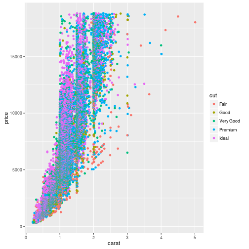

This lesson shows how to use the Software Carpentry and Data Carpentry lesson template. For guidelines on how to help improve our lessons and this template, please see the contribution guidelines; for guidelines on how to set up your machine to preview changes locally, please see the setup instructions.
Prerequisites
Use the
.prereqstyle to specify prerequisites.
Ten Things You Need To Know
- Don’t panic.
- Create a new lesson by using GitHub Import, not by forking.
- Run
bin/lesson_inititialize.pyonce in a new lesson repository to set up standard files.- Run
make lesson-checkto check that the lesson is formatted correctly.- Put lesson episodes in
_episodes(or_episodes_rmdif you are writing in RMarkdown).- Run
make serveto preview the lesson website locally.- Do not commit the generated HTML files in the
_sitedirectory.- Style blocks and code samples by putting
{: .stylename}after the block or code.- Put solutions inside challenges using nested blockquotes.
- File issues and template fixes in the styles repository, and enhancements to this documentation in this one.
Overview
Teaching: 10 min
Exercises: 0 minQuestions
How do we design lessons?
Objectives
Describe the reverse instructional design process.
Describe the purpose and implementation of formative assessments.
This episode describes how we go about designing lessons and why. For more information on how we design lessons and why, see the instructor training course.
In principle, we design lessons in four stages:
Conceptual: describe who the lesson is for, what its overall goals are, and how long it is going to be. For example, the lesson might be for people who have taught themselves how to write page-long statistical analyses in R using RStudio, but have never written functions or run programs from the Unix shell prompt. Its overall goal might be to teach them how to write modular multi-page programs and how to use dplyr to regularize their analyses, and the time allotted might be half a day. It’s often helpful to use concept maps in this stage.
Summative Assessment: figure out what learners will do to demonstrate that they have mastered the material. This is the most important step of the four, since it is what actually determines the scope of the lesson. In this case, the summative assessment might be to write a four-function program to load, clean up, analyze, and plot a collection of medical data sets.
Formative Assessments: describe the exercises that learners will do during the lesson. To switch examples for a moment, it wouldn’t be fair to ask someone to parallel park on a driving test if they’d never done it before, so two formative assessments in a driving course might be “back up” and “parallel park between some safety cones”.
Connect the Dots: put the formative assessments in order and develop lesson episodes to go from one to the next. It is common to sketch a concept map for each lesson episode, both to outline its key ideas and to check that it’s not too big. The ordering of lesson episodes is constrained by dependencies but is usually not completely determined by them: there are often several different orders in which ideas can sensibly be introduced. It is common to discover a need for more formative assessments at this stage; to continue with the driving example, the lesson author might realize that a third exercise on turning while backing up is needed (since many people initially turn the steering wheel the wrong way when they’re in reverse).
In practice, the process often looks more like this:
Draft the assumptions and major outcomes.
Describe the summative assessments for each half day of material (i.e., one summative assessment for a three-hour lesson and two for a full-day lesson).
Write a one- or two-line description of the formative assessments building up to those summative assessments. These should be paced at roughly 15-minute intervals, i.e., four per hour.
Get early feedback from peers, particularly on how realistic the time estimates are.
Do a second pass to flesh out the assumptions and assessments.
Get more feedback.
Start writing the lesson content.
Steps 1-6 are best done in a single Markdown file for easy review;
if you are using this template,
you should call it _extras/design.md.
Once work starts on step 7,
the detailed milestones should be moved into lesson episode files.
For an example of this,
see the novice Python lesson using the gapminder data.
The two purposes of formative assessment are (a) to help learners prepare for the summative assessment and (b) to tell them and their instructor during the lesson whether they’re making progress (and if not, what obstacles they have hit). If lesson episodes are 10-15 minutes long, then formative assessments should take no more than 5 minutes. This means that formative assessments should be:
Good formative assessments do not require learners to write lots of code from scratch: it takes too long, there are usually too many possible right solutions to discuss in just a couple of minutes, and many novices find a blank page (or screen) intimidating.
Key Points
Lessons are design in four stages: conceptual, summative, formative, and connective.
Overview
Teaching: 10 min
Exercises: 0 minQuestions
How are pages published?
Objectives
Explain how GitHub Pages produce web sites from Git repositories.
Explain Jekyll’s formatting rules.
This episode describes the tools we use to build and manage lessons. These simplify many tasks, but make other things more complicated.
Our lessons are stored in Git repositories (or “repos”) on GitHub. We use the term fork to mean “a copy of a GitHub-hosted repo that is also hosted on GitHub” and the term clone to mean “a copy of a GitHub-hosted repo that’s located on someone else’s machine”. In both cases, the duplicate has a reference that points to the original repo.
In an ideal world, we would put all of the common files used by our lessons (such as the CSS style files and the image files with project logos) in a template repo. The master copy of each lesson would be a fork of that repo, and each author’s working copy would be a fork of that master:
However, GitHub only allows a user to have one fork of any particular repo.
This creates a problem for us because an author may be involved in writing several lessons,
each with its own repo.
We therefore use GitHub Importer to create new lessons.
After the lesson has been created,
we manually add the template repository as a remote called template
to update the lesson when the template changes.

If a repository has a branch called gh-pages (short for “GitHub Pages”),
GitHub publishes its content to create a website for the repository.
If the repository’s URL is https://github.com/USERNAME/REPOSITORY,
the website is https://USERNAME.github.io/REPOSITORY.
GitHub Pages sites can include static HTML pages, which are published as-is, or they can use Jekyll as described below to compile HTML and/or Markdown pages with embedded directives to create the pages for display.
Why Doesn’t My Site Appear?
If the root directory of a repository contains a file called
.nojekyll, GitHub will not generate a website for that repository’sgh-pagesbranch.
We write lessons in Markdown because it’s simple to learn and isn’t tied to any specific language. (The ReStructured Text format popular in the Python world, for example, is a complete unknown to R programmers.) If authors want to write lessons in something else, such as R Markdown, they must generate HTML or Markdown that Jekyll can process and commit that to the repository. A later episode describes the Markdown we use.
Teaching Tools
We do not prescribe what tools instructors should use when actually teaching: the Jupyter Notebook, RStudio, and the good ol’ command line are equally welcome up on stage. All we specify is the format of the lesson notes.
GitHub uses Jekyll to turn Markdown into HTML. It looks for text files that begin with a header formatted like this:
---
variable: value
other_variable: other_value
---
...stuff in the page...
and inserts the values of those variables into the page when formatting it. The three dashes that start the header must be the first three characters in the file: even a single space before them will make Jekyll ignore the file.
The header’s content must be formatted as YAML,
and may contain Booleans, numbers, character strings, lists, and dictionaries of name/value pairs.
Values from the header are referred to in the page as page.variable.
For example,
this page:
---
name: Science
---
Today we are going to study .
is translated into:
<html>
<body>
<p>Today we are going to study Science.</p>
</body>
</html>
Back in the Day…
The previous version of our template did not rely on Jekyll, but instead required authors to build HTML on their desktops and commit that to the lesson repository’s
gh-pagesbranch. This allowed us to use whatever mix of tools we wanted for creating HTML (e.g., Pandoc), but complicated the common case for the sake of uncommon cases, and didn’t model the workflow we want learners to use.
Jekyll also reads values from a configuration file called _config.yml,
which are referred to in pages as site.variable.
The lesson template does not include _config.yml,
since each lesson will change some of its value,
which would result in merge collisions each time the lesson was updated from the template.
Instead,
the template contains a script called bin/lesson_initialize.py
which should be run once to create an initial _config.yml file
(and a few other files as well).
The author should then edit the values in the top half of the file.
If several Markdown files are stored in a directory whose name begins with an underscore,
Jekyll creates a collection for them.
We rely on this for both lesson episodes (stored in _episodes)
and extra files (stored in _extras).
For example,
putting the extra files in _extras allows us to populate the “Extras” menu pulldown automatically.
To clarify what will appear where,
we store files that appear directly in the navigation bar
in the root directory of the lesson.
The last episode describes these files.
Key Points
Lessons are stored in Git repositories on GitHub.
Lessons are written in Markdown.
Jekyll translates the files in the gh-pages branch into HTML for viewing.
The site’s configuration is stored in _config.yml.
Each page’s configuration is stored at the top of that page.
Groups of files are stored in collection directories whose names begin with an underscore.
Overview
Teaching: 10 min
Exercises: 0 minQuestions
How are the files in a lesson organized?
Objectives
Explain overall organization of lesson files.
Each lesson is made up of episodes that are 10-30 minutes long (including time for both teaching and exercises). The episodes of this lesson explain the tools we use to create lessons and the formatting rules those lessons must follow.
Why “Episodes”?
We call the parts of lessons “episodes” because every other term (like “topic”) already has multiple meanings, and because it encourages us to think of breaking up our lessons into chunks that are about as long as a typical movie scene, which is better for learning than long blocks without interruption.
Our lessons need artwork, CSS style files, and a few bits of Javascript. We could load these from the web, but that would make offline authoring difficult. Instead, each lesson’s repository is self-contained.
The diagram below shows how source files and directories are laid out, and how they are mapped to destination files and directories:

Collections
As described earlier, files that appear as top-level items in the navigation menu are stored in the root directory. Files that appear under the “extras” menu are stored in the
_extrasdirectory, while lesson episodes are stored in the_episodesdirectory.
As is standard with Jekyll sites,
page layouts are stored in _layouts
and snippets of HTML included by these layouts are stored in _includes.
Each of these files includes a comment explaining its purpose.
Authors do not have to specify that episodes use the episode.html layout,
since that is set by the configuration file.
Pages that authors create should have the page layout unless specified otherwise below.
The assets directory contains the CSS, Javascript, fonts, and image files
used in the generated website.
Authors should not modify these.
When the lesson repository is first created,
the initial author should create a README.md file containing
a one-line explanation of the lesson’s purpose.
The lesson template provides the following files which should not be modified:
CONDUCT.md: the code of conduct.LICENSE.md: the lesson license.Makefile: commands for previewing the site, cleaning up junk, etc.The bin/lesson_initialize.py script creates files that need to be customized for each lesson.
CONTRIBUTING.mdContribution guidelines.
The issues and repo links at the bottom of the file must be changed
to match the URLs of the lesson:
look for uses of {LESSON-NAME}.
_config.ymlThe Jekyll configuration file. This must be edited so that its links and other settings are correct for this lesson.
carpentry should be either “dc” (for Data Carpentry) or “swc” (for Software Carpentry).
title is the title of your lesson,
e.g.,
“Defence Against the Dark Arts”.
email is the contact email address for the lesson.
CITATIONA plain text file explaining how to cite this lesson.
AUTHORSA plain text file listing the names of the lesson’s authors.
index.mdThe home page for the lesson.
index layout.title field in its YAML header..prereq blockquote
detailing the lesson’s prerequisites.
(Setup instructions appear separately.)syllabus.html,
which generates the syllabus for the lesson
from the metadata in its episodes.reference.mdA reference guide for the lesson.
reference layout."Reference"./reference/.The template will automatically generate a summary of the episodes’ key points.
setup.mdDetailed setup instructions for the lesson.
page layout."Setup"./setup/.Note that we usually divide setup instructions by platform, e.g., include level-2 headings for Windows, Mac OS X, and Linux with instructions for each. The workshop template links to the setup instructions for core lessons.
_extras/about.mdGeneral notes about this lesson. This page includes brief descriptions of Software Carpentry and Data Carpentry, and is a good place to put institutional acknowledgments.
_extras/discussion.mdGeneral discussion of the lesson contents for learners who wish to know more:
page layout."Discussion"./discuss/.This page normally includes links to further reading and/or brief discussion of more advanced topics.
_extra/figures.md and _includes/all_figures.htmlDoes nothing but include _includes/all_figures.html,
which is (re)generated by make lesson-figures.
This page displays all the images referenced by all of the episodes,
in order,
so that instructors can scroll through them while teaching.
_extras/guide.mdThe instructors’ guide for the lesson.
page layout."Instructors' Guide"./guide/.This page records tips and warnings from people who have taught the lesson.
Key Points
Auxiliary files are stored in the _layouts, _includes, and assets directories.
The code of conduct, license, Makefile, and contribution guidelines should not be modified.
The README, authors’ list, and citation instructions must be updated for each lesson.
The home page, reference guide, setup instructions, discussion page, and instructors’ guide must be updated for each lesson.
The Makefile stores commonly-used commands.
Overview
Teaching: 10 min
Exercises: 0 minQuestions
How are Software and Data Carpentry lessons formatted?
Objectives
Explain the header of each episode.
Explain the overall structure of each episode.
Explain why blockquotes are used to format parts of episodes.
Explain the use of code blocks in episodes.
A lesson consists of one or more episodes, each of which has:
The diagram below shows the internal structure of a single episode file (click on the image to see a larger version):

Episode files are stored in _episodes
so that Jekyll will create a collection for them.
Episodes are named dd-subject.md,
where dd is a two-digit sequence number (with a leading 0)
and subject is a one- or two-word identifier.
For example,
the first three episodes of this example lesson are
_episodes/01-design.md,
_episodes/02-tooling.md
and _episodes/03-formatting.md.
These become /01-design/index.html, /02-tooling/index.html, and /03-formatting/index.html
in the published site.
When referring to other episodes, use:
[link text]({{ site.github.url }}/dd-subject/)
i.e., use the episode’s directory path below the site root
without the index.html (which the web server fills in automatically).
This will ensure that the link is valid both when previewing during desktop development
and when the site is published on GitHub.
Each episode’s YAML header must contain:
These values are stored in the header so that Jekyll will read them
and make them accessible in other pages as site.episodes.the_episode.key,
where the_episode is the particular episode
and key is the key in the YAML header.
This lets us do things like
list each episode’s key questions in the syllabus on the lesson home page.
The episode layout template in _layouts/episode.html automatically creates
an introductory block that summarizes the lesson’s teaching time,
exercise time,
key questions,
and objectives.
It also automatically creates a closing block that lists its key points.
In between,
authors should use only:
Authors should not use:
div elements).Inline code fragments are formatted using back-quotes.
Longer code blocks are formatted by opening and closing the block with ~~~ (three tildes),
with a class specifier after the block:
~~~
for thing in collection:
do_something
~~~
{: .source}
which is rendered as:
for thing in collection:
do_something
The class specified at the bottom using an opening curly brace and colon, the class identifier with a leading dot, and a closing curly brace. The template provides three styles for code blocks:
.source: program source.
.output: program output.
.error: error messages.
The following styles are all synonyms for .source;
please use them where possible to indicate the type of source being displayed,
in case we decide to adopt syntax highlighting at some point:
.bash: Bash shell commands.make: Makefiles.matlab: MATLAB source.python: Python source.r: R source.sql: SQL sourceWhy No Syntax Highlighting?
We do not use syntax highlighting for code blocks because some learners’ systems won’t do it, or will do it differently than what they see on screen.
We use blockquotes to group headings and text
rather than wrapping them in div elements.
in order to avoid confusing Jekyll’s parser
(which sometimes has trouble with Markdown inside HTML).
Each special blockquote must started with a level-2 header,
but may contain anything after that.
For example,
a callout is formatted like this:
> ## Callout Title
>
> text
> text
> text
>
> ~~~
> code
> ~~~
> {: .source}
{: .callout}
(Note the empty lines within the blockquote after the title and before the code block.) This is rendered as:
Callout Title
text text text
code
The lesson template defines styles for the following special blockquotes:
.callout
An aside or other comment.
.challengeAn exercise.
.checklistChecklists.
.discussionDiscussion questions.
.keypointsKey points of an episode.
.objectivesEpisode objectives.
.prereqPrerequisites.
.solutionExercise solution.
.testimonialA laudatory quote from a user.
Note that .challenge and .discussion have the same color but different icons.
Note also that one other class, .quotation,
is used to mark actual quotations
(the original purpose of the blockquote element).
This does not add any styling,
but is used to prevent the checking tools from complaining about a missing class.
Most authors will only use .callout, .challenge, and .prereq,
as the others are automatically generated by the template.
Note that .prereq is meant for describing things that learners should know before starting this lesson;
setup instructions do not have a particular style,
but are instead put on the setup.md page.
Note also that solutions are nested inside exercises as shown below:
> ## Challenge Title
>
> This is the body of the challenge.
>
> ~~~
> it may include some code
> ~~~
> {: .source}
>
> > ## Solution
> >
> > This is the body of the solution.
> >
> > ~~~
> > it may also include some code
> > ~~~
> > {: .output}
> {: .solution}
{: .challenge}
The double indentation is annoying to edit, but the alternatives we considered and discarded are worse:
Use HTML <div> elements for the challenges.
Most people dislike mixing HTML and Markdown,
and experience shows that it’s all too easy to confuse Jekyll’s Markdown parser.
Put solutions immediately after challenges rather than inside them. This is simpler to edit, but clutters up the page and makes it harder for tools to tell which solutions belong to which exercises.
Key Points
Lesson episodes are stored in _episodes/dd-subject.md.
Each episode’s title must include a title, time estimates, motivating questions, lesson objectives, and key points.
Episodes should not use sub-headings or HTML layout.
Code blocks can be have the source, regular output, or error class.
Special sections are formatted as blockquotes that open with a level-2 header and close with a class identifier.
Special sections may be callouts or challenges; other styles are used by the template itself.
Overview
Teaching: 5 min
Exercises: 0 minQuestions
How can lesson formatting be checked?
How can lessons be previewed?
Objectives
Run the lesson checking script and interpret its output correctly.
Preview a lesson locally.
The lesson template comes with several utilities to simplify lesson development and maintenance.
The template includes a Python program to check
whether lesson files conform to our template.
You can run this using make lesson-check,
which in turn invokes bin/markdown_ast.rb to parse Markdown files
and bin/lesson_check.py to check their structure.
The former is written in Ruby,
and uses Jekyll’s own Markdown parser (called Kramdown)
so that we are guaranteed to be checking the same dialect of Markdown that Jekyll uses on GitHub.
The latter is written in Python 3,
and executes all of the checks.
The template also includes bin/repo_check.py,
which can be invoked by running make repo-check.
This program looks in _config.yml to find the repository’s URL,
then checks that the repository has the right labels set up for issues and pull requests.
Other checks will be added as time goes by.
Jekyll can be used in two ways:
to compile source files into HTML pages in the _site directory,
or to do that and also run a small web server at http://0.0.0.0:4000/
so that the pages can be previewed.
We recommend using the latter,
since it gives a more accurate impression of what your lesson will actually look like.
The Makefile in the root directory of the project contains commands for building the site.
make site builds files but does not run a server,
while make serve builds the files and runs a server.
(It also re-builds the site whenever it notices changes in the source files.)
Run make on its own to get a full list of commands.
In order to use Jekyll and/or the checking script, you may need to install it and some other software. The setup instructions explain what you need and how to get it.
The command make lesson-figures uses the script bin/make_figures.py
to regenerate includes/all_figures.html,
which links to every figure used in the episodes (in order).
Instructors can scroll through this page to display figures while teaching.
Key Points
Lessons are checked by running
make lesson-check.The checker uses the same Markdown parser as Jekyll.
Lessons can be previewed by running
make serve.
Overview
Teaching: 10 min
Exercises: 2 minQuestions
How to write a lesson using RMarkdown?
Objectives
Explain how to use RMarkdown with the new lesson template.
Demonstrate how to include pieces of code, figures, and challenges.
This episode demonstrates all the features that can be used when writing a lesson in RMarkdown.
This first chunk is really important, and should be included in all markdown lessons.
The rest of the lesson should be written as a normal RMarkdown file. You can include chunk for codes, just like you’d normally do:
Normal output:
1 + 1
[1] 2
Output with error message:
x[10]
[1] NA
Output generating figures:
library(ggplot2)
ggplot(diamonds, aes(x = carat, y = price, color = cut)) +
geom_point()

For the challenges and their solutions, you need to pay attention to the where
the > go and where to leave blank lines. Otherwise, you can include chunks in
it to include instructions and solutions.
Challenge: Can you do it?
What is the output of this command?
paste("This", "new", "template", "looks", "good")Solution
[1] "This new template looks good"
Key Points
It shouldn’t be difficult
Overview
Teaching: 5 min
Exercises: 0 minQuestions
What do lesson maintainers do?
Objectives
Explain the rights and responsibilities of lesson maintainers.
This episode describes the processes used to maintain our lessons.
Each Software or Data Carpentry lesson has one or two maintainers, who are responsible for making sure issues and change requests are looked at, and who have final say over what is included in the lesson. Together, they also decide on changes to the lesson templates, release procedure, and other mechanical aspects of lesson production. They are not responsible for writing lesson content or deciding what lessons ought to exist: the former comes from the community, and the latter from the Executive Directors and Steering Committees of Software and Data Carpentry.
The process for selecting and onboarding a new maintainer is:
We have decided to use a 6-month release cycle for releases, which
will be named by the year and month they happen, e.g., 2016.05.
gh-pages branch of its own repository.2016.05.swc-release repository,
the release maintainer creates one
and adds an index.html page to it.swc-release
that points to the newly-created release branch of the lesson.Our repositories use the following labels (and colors) for issues and pull requests:
bug (#bd2c00): errors to be fixed.discussion (#fc8dc1): discussion threads.enhancement (#9cd6dc): new features.help-wanted (#f4fd9c): requests for assistance.instructor-training (#6e5494): pull requests submitted as part of instructor training.newcomer-friendly (#eec275): suitable for people who are still learning the ropes.question (#808040): often turn into discussion threads.template-and-tools (#2b3990): issues related to the templates and tools rather than the lessons themselves.work-in-progress (#7ae78): someone is still working on this.Key Points
Each lesson has one or two maintainers who act as editors.
Maintainers are responsible for ensuring that issues and change requests are addressed.
Maintainers have final say over lesson content.
We use a standard set of labels to classify issues and pull requests.